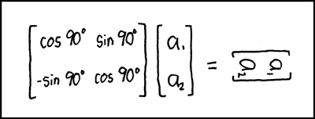

flang + wasm = <3 (?)
Serge « sans paille » Guelton
Compiler Engineer / Story Teller / Wood Chopper
FOSDEM — 1st February 2025

flang
fortran

elder
science

matrices

LAPACK

scipy

Python

Education

Jupyter Notebooks
WebAssembly
Summary
- People want to run scipy in the browser
- They want it fast: they use WebAssembly
- Scipy depends on Fortran: use flang to generate WASM code
Problem
Flang is not a cross compiler!
but
We can bypass the configuration step:
- Configure a different host and target
- Modify the few places where flang assumes host == target
Not Sustainable?
- Most hacks needed to by-pass host == target upstreamed
- sizeof(integral_type) hard-coded and patched downstream
</(o_0)\ >
This is how people currently run R and Python in the browser
</(o_0)\ />
Credits
Dr George W Stagg for the original blog post: https://gws.phd/posts/fortran_wasm/#compiling-blas-and-lapack-for-webassembly
Wizards of the Coast for the illustration of Game of Chaos and Elder Land Wurm
xkcd, «a treasured and carefully guarded point in the space of four-character strings»